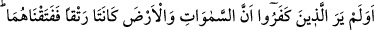
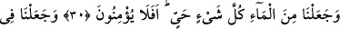
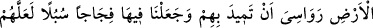
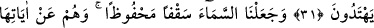
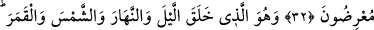
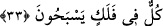
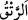
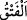

HER CANLI
SUDAN YARATILMIŞTIR
30. İnkâr edenler, göklerle yer bitişik bir halde iken bizim, onları birbirinden
kopardığımızı ve her canlı şeyi sudan yarattığımızı görüp düşünmediler mi? Yine de
inanmazlar mı?
31. Onları sarsmasın diye yeryüzünde bir takım dağlar diktik. Orada geniş geniş
yollar açtık; ta ki maksatlarına ulaşsınlar.
32. Biz, gökyüzünü korunmuş bir tavan gibi yaptık. Onlar ise, gökyüzünün
âyetlerinden yüz çevirirler.
33. O, geceyi ve gündüzü, güneşi ve ayı yaratandır. Her biri bir yörüngede
yüzmektedirler.
“İnkâr edenler, göklerle yer bitişik” aralarında bir boşluk ve açıklık olmaksızın
birbirlerine yapışık, birleşik “bir halde iken bizim, onları birbirinden kopardığımızı”
rüzgarla birini diğerinden ayırdığımızı “ve her canlı şeyi sudan yarattığımızı görüp
düşünmediler mi?” Bu soru görmemeyi red ve inkâr içindir. Olumsuzluğun reddi de
olumsuzluktur. Olumsuzluğun olumsuzluğu ise olumludur. Yâni onlar gördüler demektir.
Buradaki “görmek” göze âit değil kalbe âittir. Bu durum, bu âyetin “Ben onları (İblis
ve soyunu) ne göklerin ve yerin yaratılışına, ne de bizzat kendilerinin yaratılışına
şahit tuttum.” (el-Kehf, 18/51) âyetiyle çelişmemesi içindir. Mânâsı, ‘Onlar hiç
düşünmediler mi, âlimlerden açıklamasını istemediler mi, kitapları mutâlaa etmediler
mi, vahyi duymadılar mı da bilmediler?’ demektir.
“
”, yaratılışta ya da sonradan yapmakla, katmak ve kaynaştırmak demektir. “
”
ise bitişik iki şeyi birbirinden ayırmaktır ki “er-ratk”ın zıddıdır.
Göklerle yer bitişikken Allâh’ın onları birbirinden ayırdığıyla ilgili meşhur bir
hadiste şöyle buyrulmuştur: “Allâh’ın ilk yarattığı şey, bir cevherdir. Allah ona heybet
nazarı ile nazar etti de o cevher, Rabb’inin korkusundan eridi, titredi ve su oldu.